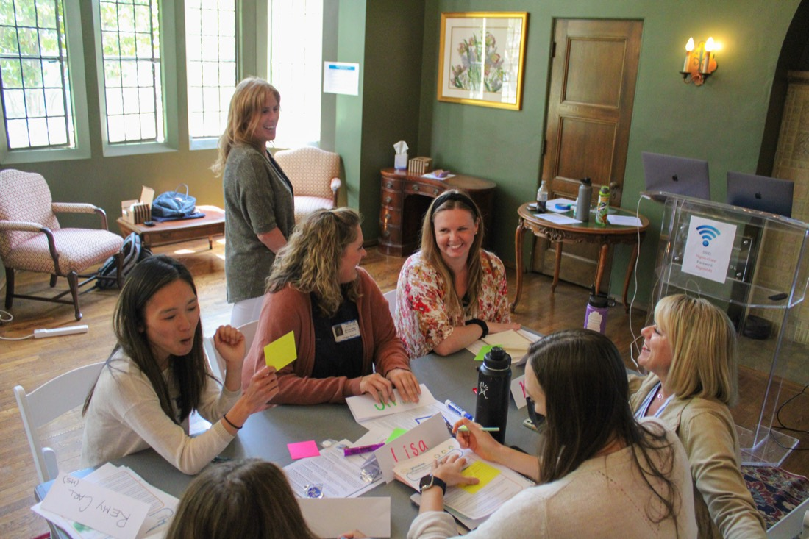
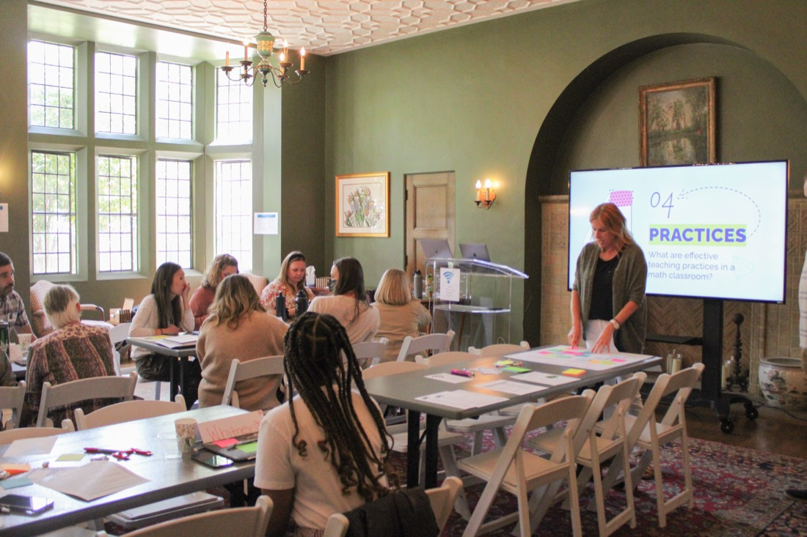
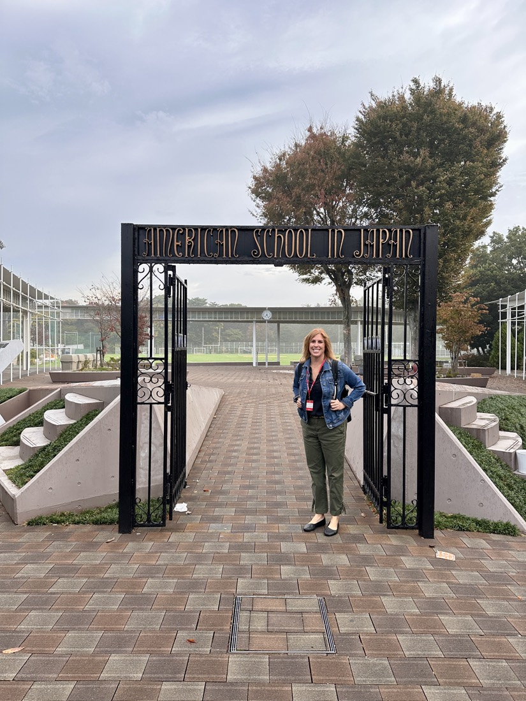

Math teaching & learning · PreK–Grade 12
At MathSpeakGlobal, we partner with teachers and leaders to support transformation in math teaching & learning — from a single workshop to a multi-year journey.

Where it starts
What we believe
Every student is capable of learning mathematics at a high level, and the teacher is the critical factor for student success.
Persistent, passionate, and playful problem solving is at the core of mathematics at all levels.
Mathematics learning should focus on developing deep understanding of concepts and the connections between them.
Lessons and tasks should be carefully designed so that all students can access and learn at high levels.
Students of all ages should be active agents in their own learning by engaging in reflection and self-assessment.
Students should have frequent opportunities to collaborate with peers about their mathematics learning.
Schools must foster positive messages about learning mathematics and embrace a growth mindset.
Students should be actively engaged in the act of doing mathematics, and not just listening to or watching a teacher.

Consulting & partnerships
Flexible collaboration options from short workshops to strategic, multi-year partnerships across grades K–12. When you work with us, expect active engagement from all participants using approaches designed especially for groups.
Active, engaging delivery and shared practices which embody the transfer from the workshop to the classroom.
Partnering in sharing ideas, building capacity through conversation, action-planning, and sharing resources.
Seeking and sharing information and knowledge through questioning, wondering, and making connections.
Metacognition, goal setting, and organizing and integrating information into everyday classroom practice.
Program topics
A foundational workshop for teachers of all grade levels to explore effective instructional practices — examining teaching beliefs, how mindsets affect achievement, and how to find and design mathematical tasks for engagement.
Build capacity with the Mathematics Teaching Practices from NCTM's Principles to Actions. Participants examine beliefs and learn how to strengthen the mathematics learning in their classrooms.
Unpack the content standards across grades K–12 within each strand, and examine how the standards progress from grade level to grade level in relation to the Common Core State Standards.
Assessment and feedback are critical elements of effective mathematics teaching and learning. Participants design assessment systems and learn essential practices in standards-based grading.
Inside the work

About
We are passionate educators who care deeply about improving the mathematics teaching & learning experiences of all students and all teachers around the world.
Megan is an independent consultant partnering with schools around PreK–Grade 12 mathematics teaching & learning. Most recently an Instructional Coach in K–8 Mathematics at the American School of Dubai, she brings more than 25 years in education — including 13 years in the classroom across elementary and middle school grades — with expertise in curriculum development, teacher coaching, and instructional leadership.
Megan is adjunct faculty at Loyola Marymount University's Center for Math & Science Teaching, a former editorial panel member for Teaching Children Mathematics, and current department editor for Mathematics Teacher: Learning & Teaching PK–12. She served on California's Instructional Materials Adoption Panel (2005) and Teachers Mathematics Advisory Panel (2009–2010), consulted with Math Solutions (the Marilyn Burns company), and has presented at ECIS, NESA, and international education conferences worldwide.
I can't thank you enough for the most engaging and enriching past two days. The information was inspiring, discussions enriching, and learning extraordinary.
Friends
An approach that focuses on the power of questions to drive instruction and deepen student learning.
mbornst@gmail.comCreating and sustaining inclusive cultures in dynamic learning organizations.
pathwaystoinclusiveeducation.comPartnerships that support schools as they develop standards-based learning systems that integrate learner agency and personalized opportunities.
balancedpl.comA small team of #EduDataNerds with a passion for helping colleagues and professional learning networks see how data can transform learning in beautiful ways.
visualizeyourlearning.comCore resources
Participants will learn about these — and many others — during our collaboration.
Contact
Tell us about your school and your goals, and we'll begin the partnership. Megan is based between the USA & Spain.
megan.holmstrom@gmail.com{kind=link}
{kind=link}
{kind=link}
{kind=link}
{kind=link}
{kind=link}